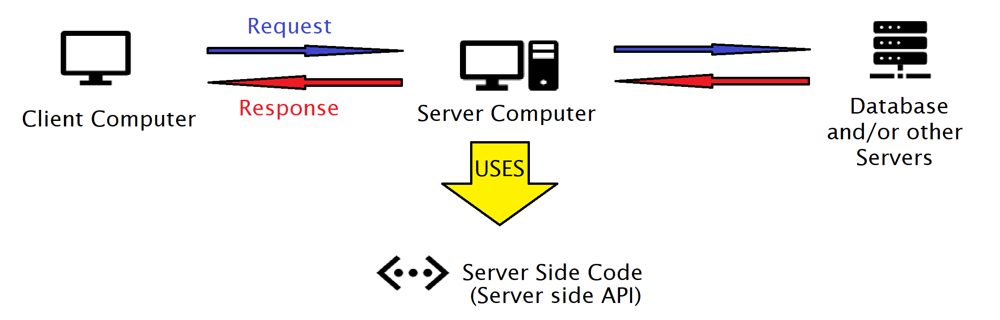

Creating Restful APIs with Node.js and Express (Part 1)
Introduction
I will be covering the ground up creation of a Restful API in my blog in two parts. In part 1, we will be looking into what Node.js is, the structure of web application, what a Rest API is, and how to set a basic one up using Node.js, what Express is, and how to set up express. In part 2, I'll demonstrate the use of express, further highlight the advantages of Express by creating a more complex API, and how to test the more complex API using software called Postman. I will assume that you have no idea what Node, Express, and Postman are, and thus this will be a comprehensive guide to the basics to these technologies. You will need some sort of text editor to create files and the knowledge of running commands through windows terminal. I'll be using visual studio code for this course; a free IDE that allows one to open a terminal window in the editor. Feel free to use your own choice of development environment; It will not matter for this tutorial!
Without further delay, lets dive in!
What is Node.js?
Node.js at its core is the following two things:
1. A way to run code server side
2. A package manager for libraries for code that runs server side
Node.js at its core is the following two things:
We will focus on the first point for now, and touch on the second point later when we get into Express.
Before Node.js came around, the only way of running and utilizing JavaScript code was using a web browser. One familiar with web development might have used JavaScript to add functionality to a web page, such as when a button is pressed the web page performs some sort of event. Or a practitioner of JavaScript before Node.js may have used JavaScript to animate something on such a web page. Such as a loading bar. Beyond adding interactivity to a webpage, one could not use JavaScript anywhere else; it was strictly for web browser use. That is, until Node.js came out 2009. Node.js simply offers a way to run java script code without using a web browser directly on your computer! Let's see how that works!
Setting Up Node.js
To set tup node.js on your computer, simply follow this link (or type NodeJS on your google search bar) and download one of the latest versions from the website. Run the executable file after downloading, and simply follow the steps. I recommend just using the default settings and parameters for this tutorial.
Once this is completed, check to see if your download worked by opening up a command line window and typing the following command line.
node
By typing this into the command line, one should get the following result.
Welcome to Node.js vXX.XX.XX
If you see a result similar to this, then you are good to go!
Creating and Running a Javascript file through Node.js
To begin, we will be simply running a basic "Hello World" application that will return "Hello World" in the command line. To do this, simply copy and paste this code into a text editor and save it as hello.js.
console.log("Hello World");
Then using command line, navigate to the directory and type in the command node hello.js. And viola; hello world! It is worth noting that this is very similar to JavaScript on browser with only some differences. The major one is that JavaScript ran by Node.js does not have access to browser specific functions and libraries. It cannot refer to html pages using the Document Object Model methods or use the alert function (a function that opens an alert box in the browser). On the other hand, it does have the ability to read and write files on the computer; functionality that browser-based JavaScript can't do.
Now at this point, you may be wondering “I guess that is cool, but I could print out hello world in browser without node.js. Surely there is a reason why we would want to run JavaScript code in this format, right?”. Correct! Let's think about web application architecture for a moment.
Web Application Architecture
A web application is simply a program that is executed on a remote server and is interacted with through a browser interface. To better clarify, lets observe the diagram below:
The client uses a web browser to send requests to the client-side computer, which returns a response that is displayed on the client's computer. Though how does the server computer know what to send through the client computer? What reads the client's request and comes with an appropriate response? How does the computer even know to listen to incoming requests? All these things are done through the program that Is ran on the server-side computer. Remember how node.js allows java code to be ran on a computer? Well, this is the main reason why node.js is used; to run server-side programs!
What is Restful? What is a Restful API?
In a web application, the best practice is to program into the server a Restful API. To understand what that means, lets break down the words "API" and "Restful".
An API stands for Application Programming Interface. It is a general term for a software interface that offers it software services. For example, MSWord can be seen as a software interface that provides it's writing services.
Restful stands for Representational State Transfer. It is a software architectural style that was created to guide the design of websites. It is a set of rules that best guide HTTP requests to and from their destination (Hyper Text Transfer Protocol; the process in which web browsers receive and send signals). It is used by most webservers to receive HTTP requests and send back HTTP responses. Consider anytime you enter a web address on the address bar at the top of your browser. When you do so, you are sending a request and are partaking in the HTTP protocol. Given that the web address is valid, a server that is listening for that web address receives the request and sends back a response with information that is parsed and displayed by the browser. This server most likely used Restful architecture to handle that request.
Combining both words, we can come up with the following definition: a Restful API is a software application interface following restful architecture that is interacted trough HTTP protocol and returns its information to a web browser. Behind most web applications, there is a Rest API that is handling your request.
There are several different methods a restful API can handle these requests, though it mostly comes down to two major methods: GET and POST. GET is often utilized when there is no data attached to the request, while POST is used when data is attached to the request. I'll talk more on this in the video below.
Creating a Restful API with Node
Now that we know where JavaScript code fits into our application, lets start programming! Follow along in the video below.
What is Express?
You could technically write an entire backend API in the matter that I have showcased in the above video, but there are a couple of flaws behind that:
1. No code segregation: all the routes and code for those routes are on the one page. For larger projects it's going to make for one file with thousands of lines of code. Rember that each endpoint will contain all the logic for when it is called too!
2. We must manually check for get and post requests. In the setup in the video, we are not taking advantage of the browser indicating what kind of request is sent. Instead, we are using JavaScript to decipher what kind of request is being sent.
Luckily, there is a JavaScript library that can segregate the file and automatically parse the incoming request for us: Express.js (or Express). Express is a JavaScript library that adheres to the RESTful guidelines and makes setting up back-end APIs easier.
Installing Express
We can install this into our JavaScript project easily using the package manager part of node. Node.js in addition to being a way to run code server side is also a manager of JavaScript libraries. It is often used to add and manage libraires that are used server side, such as Express. Because of this, setting up express in your node.js project is easy. To install express for your JavaScript project, one simply needs to run the following two commands in the main directory of the project:
npm init
npm install express
And thats it! Node takes care of the rest. We'll focus more on how to use express in part 2.
Conclusion
And that's wrap for part 1. We now know what a Node.js is, where node comes into play in a web application, and how to create a basic API for a web application using Node.js, and why Express is used in tandem with Node. In the next part, I'll demonstrate the use of express, further highlight advantages of Express, give an example of a more complete backend API, and test that API using software called postman.